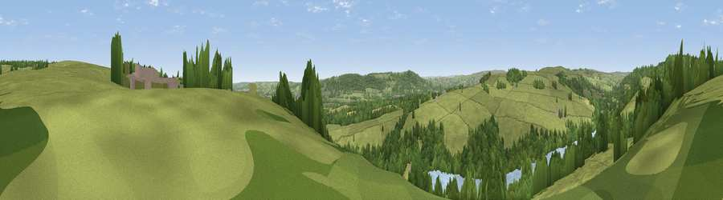

Viewpoint near Farnley
#24440 in England · top 45% of its area beats it · near FarnleyThe view, rendered

A 360° render of this exact spot computed from the terrain model, tree cover and land cover — summer colours, afternoon light, calibrated against photographs of famous viewpoints. Real trees, hedges and buildings will differ in detail.
The panorama
Grey silhouette: terrain skyline in each direction (720 bearings, Earth curvature and refraction included). Dashed green: skyline with trees (+15 m) and buildings (+8 m) as obstacles. Blue strip: how far the ground is visible on each bearing.
Where the view opens
Wedge length = distance to the farthest visible ground on that bearing (vegetation-aware). Rings at 10, 25 and 50 km.
What fills the view
59% grassland · 27% woodland · 11% water · 2% cropland ·
Angular shares of the visible panorama (visual magnitude), not map area. Landscape diversity 0.45 (0–1 Shannon).
Key numbers
More beautiful places nearby
The staircase of upgrades: each row has a higher view potential than everything closer. Driving times are estimates from straight-line distance, calibrated against real road routing — check an actual route before setting out.
| Place | Direction | Drive | Score |
|---|---|---|---|
| Viewpoint near Clifton | WSW · 2 km | ~5 min | 51.3 |
| Fox Crag | NNW · 2 km | ~6 min | 56.8 |
| Viewpoint near Timble | NNW · 3 km | ~7 min | 68.1 |
| Viewpoint near Timble | NW · 3 km | ~7 min | 68.3 |
| Surprise View | SSW · 5 km | ~11 min | 70.7 |
| Viewpoint near Otley | SSW · 5 km | ~12 min | 77.5 |
| Viewpoint near East Witton | NNW · 37 km | ~55 min | 77.8 |
| Hood Hill | NE · 43 km | ~62 min | 79.6 |
53.93822, -1.66446 · source: screening · position refined by local search. Computed location — check access rights before visiting.